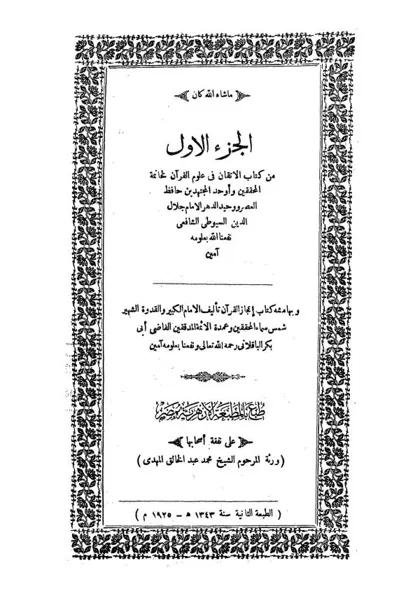

الإتقان في علوم القرآن
Al-Itqan fi 'Ulumil Qur'an
Baca Al-Itqan fi 'Ulumil Qur'an (الإتقان في علوم القرآن) karya Imam as-Suyuti secara gratis di Maktabah Ilmu: teks Arab, Indonesia (sebagian terjemah dibuat AI). Tanpa daftar, tanpa iklan.
Buka kitab iniLihat lemari ilmuDaftar isi
- مقدمة
- مقدمة المؤلف
- النوع الأول: في معرفة المكي والمدني
- النوع الثاني: في معرفة الحضري والسفري
- النوع الثالث: معرفة النهاري والليلي
- النوع الرابع: الصيفي والشتائي
- النوع الخامس: الفراشي والنومي
- النوع السادس: الأرضي والسمائي
- النوع السابع: معرفة أول ما نزل
- النوع الثامن: معرفة آخر ما نزل
- النوع التاسع: معرفة سبب النزول
- النوع العاشر: فيما أنزل من القرآن على لسان بعض الصحابة
- النوع الحادي عشر: ما تكرر نزوله
- النوع الثاني عشر: ما تأخر حكمه عن نزوله وما تأخر نزوله عن حكمه
- النوع الثالث عشر: ما نزل مفرقا وما نزل جمعا
- النوع الرابع عشر: ما نزل مشيعا وما نزل مفردا
- النوع الخامس عشر: ما أنزل منه على بعض الأنبياء وما لم ينزل منه على أحد قبل النبي صلى الله عليه وسلم
- النوع السادس عشر: في كيفية إنزاله
- النوع السابع عشر: في معرفة أسمائه وأسماء سوره
- النوع الثامن عشر: في جمعه وترتيبه
- النوع التاسع عشر: في عدد سوره وآياته وكلماته وحروفه
- النوع العشرون: في معرفة حفاظه ورواته
- النوع الحادي والعشرون: في معرفة العالي والنازل من أسانيده
- النوع الثاني والثالث والرابع والخامس والسادس والسابع والعشرون: معرفة المتواتر والمشهور والآحاد والشاذ والموضوع والمدرج
- النوع الثامن والعشرون: في معرفة الوقف والابتداء
- 1-
- 2-
- 3-
- 4-
- 5-
- 6-
- 7-
- النوع التاسع والعشرون: في بيان الموصول لفظا المفصول معنى
- النوع الثلاثون: في الإمالة والفتح وما بينهما
- النوع الحادي والثلاثون: في الإدغام والإظهار والإخفاء والإقلاب
- النوع الثاني والثلاثون: في المد والقصر
- النوع الثالث والثلاثون: في تخفيف الهمز
- النوع الرابع والثلاثون: في كيفية تحمله
- النوع الخامس والثلاثون: في آداب تلاوته وتاليه
- النوع السادس والثلاثون: في معرفة غريبه
- النوع السابع والثلاثون: فيما وقع فيه بغير لغة الحجاز
- النوع الثامن والثلاثون: فيما وقع فيه بغير لغة العرب
- النوع التاسع والثلاثون: في معرفة الوجوه والنظائر
- النوع الأربعون: في معرفة معاني الأدوات التي يحتاج إليها المفسر (1)
- النوع الأربعون: في معرفة معاني الأدوات التي يحتاج إليها المفسر (2)
- النوع الحادي والأربعون: في معرفة إعرابه
- النوع الثاني والأربعون: في قواعد مهمة يحتاج المفسر إلى معرفتها
- النوع الثالث والأربعون: في المحكم والمتشابه
- النوع الرابع والأربعون: في مقدمه ومؤخره
- النوع الخامس والأربعون: في عامه وخاصه
- النوع السادس والأربعون: في مجمله ومبينه
- النوع السابع والأربعون: في ناسخه ومنسوخه
- النوع الثامن والأربعون: في مشكله وموهم الاختلاف والتناقض
- النوع التاسع والأربعون: في مطلقه ومقيده
- النوع الخمسون: في منطوقه ومفهومه
- النوع الحادي والخمسون: في وجوه مخاطباته
- النوع الثاني والخمسون: في حقيقته ومجازه
- النوع الثالث والخمسون: في تشبيهه واستعاراته
- النوع الرابع والخمسون: في كناياته وتعريضه
- النوع الخامس والخمسون: في الحصر والاختصاص
… dan 59 bab lainnya.